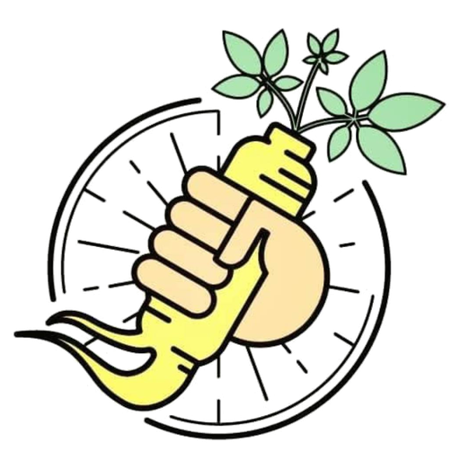
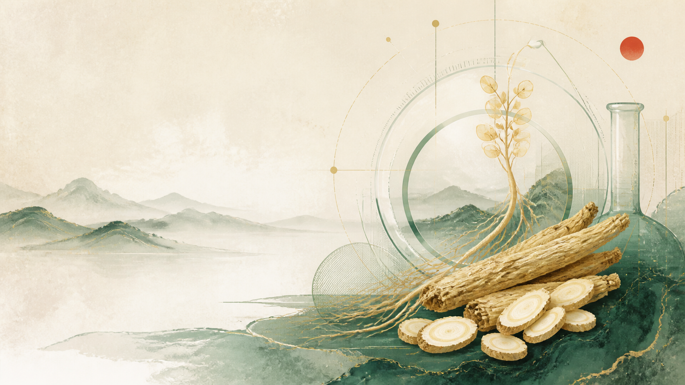
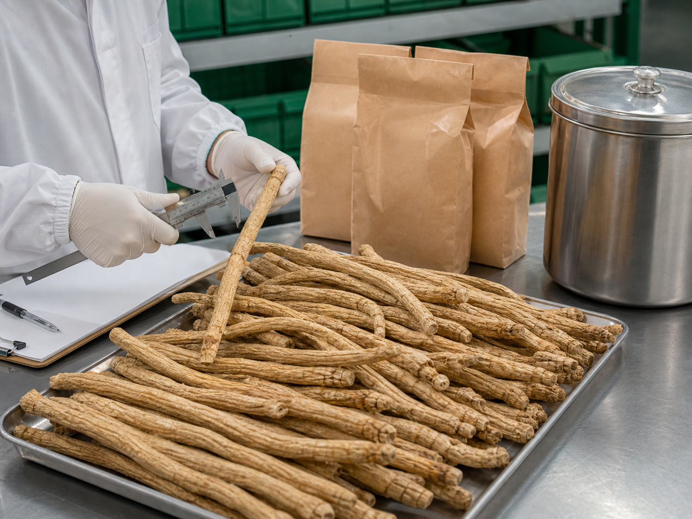
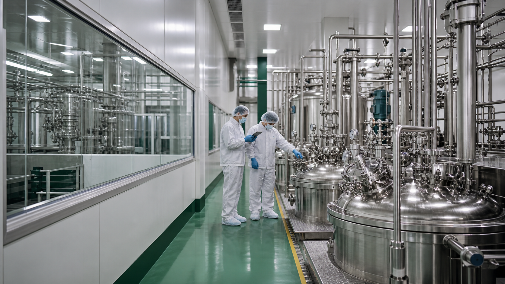
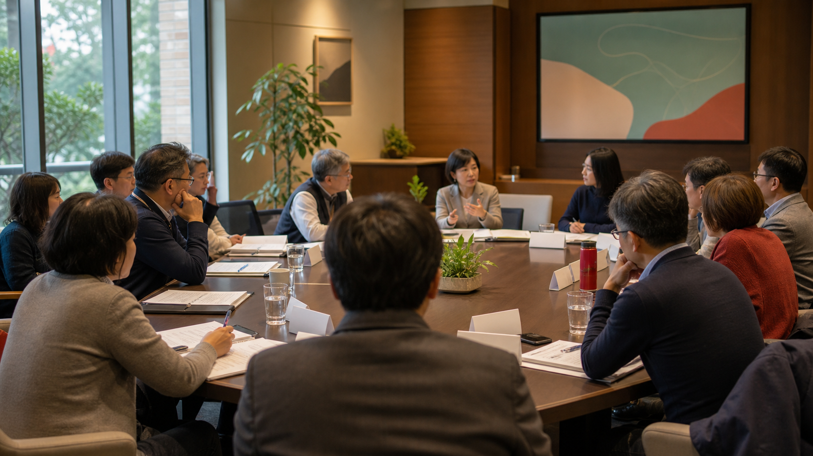

看見源頭
理解藥材從產地、供應商到入廠前的品質管理思維。

台灣中藥權益促進會2026 ANNUAL GATHERING · TAOYUAN
會員大會暨中藥產業參訪
從藥材源頭、品質檢驗到現代製程，走進產業現場；再回到會員共同議事的桌前，把專業經驗轉化為下一步行動。

01 / WHY WE GATHER
品質，不只是一份檢驗報告。
它始於產地，也成於每一個人的專業判斷。
這不只是一趟工廠參訪，也是一場把「源頭管理、製程實務、產業權益」放在同一張桌上討論的年度聚會。
上午以現場觀察建立共同語言；下午透過會員大會凝聚問題、提案與行動方向，讓專業交流真正回到產業日常。

理解藥材從產地、供應商到入廠前的品質管理思維。
把書面規範放進實際場域，看見品質如何被執行與記錄。
在會員大會中交換實務經驗，凝聚產業權益與共同倡議。
02 / QUALITY FOCUS
專題交流將以實務管理為核心，協助會員建立一套更完整的品質觀察框架。

從產地、採收、加工到入廠，建立可回溯的供應鏈資訊。
以專業鑑別與檢驗方法確認藥材身分，降低混誤用風險。
依藥材特性關注農藥、重金屬、真菌毒素與微生物等品質風險。
透過規格、文件、稽核與持續溝通，建立穩定的合作關係。
理解中藥製劑從原料到成品的管制節點與紀錄邏輯。
兼顧溫濕度、庫存管理、包材與產業長期韌性。
03 / FULL DAY PROGRAM
上午深入製藥現場，下午移動至會員大會。點選任一時段，可展開內容與注意事項。
04 / TWO VENUES · ONE PURPOSE
兩個場地皆位於桃園市平鎮區。自行開車者請預留停車、假日車流與兩地轉場時間。
09:00 — 15:00
桃園市平鎮區工業三路 20-1 號
遊覽車 1–2 台
或自用汽車
15:30 — 20:00
桃園市平鎮區延平路二段 371 號
08:50 自桃園高鐵站出發，車程預估約 40 分鐘。確切集合出口、聯絡窗口與車牌將由主辦單位另行通知。
08:40 前抵達集合點05 / MEMBERS IN ACTION
下午會議不只是例行程序，而是協會梳理產業現況、承接會員聲音、確認下一階段工作方向的重要時刻。

回顧協會階段性工作、產業服務與重要議題進度。
依正式議程進行說明、意見交換與表決程序。
彙整第一線實務問題，辨識可共同推動的倡議方向。
確認分工、追蹤節點與後續溝通方式，讓共識持續前進。
06 / BEFORE YOU GO
把一整天走得從容：建議於出發前一天，再確認接駁、服裝與個人需求。
建議商務休閒穿著，選擇包覆性、防滑且適合久站步行的鞋款；依現場規定配戴參訪用品。
請攜帶個人證件、環保水杯、常用藥品與輕便雨具；貴重物品請自行妥善保管。
依分組動線行進，不任意離隊或觸碰設備；攝影、錄影與飲食均以現場指示為準。
素食、過敏原、無障礙協助、接駁與攜伴需求，請在主辦單位指定期限前完成回報。
確認接駁
集合出口與聯絡人
確認餐食
素食與過敏需求
確認返程
晚宴後交通安排
準時報到
09:30 前抵達會場
07 / QUICK ANSWERS
可以。請直接導航至科達製藥，下午依工作人員引導前往 Amour 阿沐；停車位置與費用以場地當日公告為準。
會員大會預計 16:30 開始，建議 16:15 前抵達 Amour 阿沐婚宴會館並完成簽到。
廠區涉及製程與品質管理，請以現場開放區域及工作人員指示為準；未經同意請勿攝影或錄影。
可能因交通、廠區作業或會務需要微調。最終集合資訊、分車與桌次以主辦單位會前通知為準。
台灣中藥權益促進會 主辦